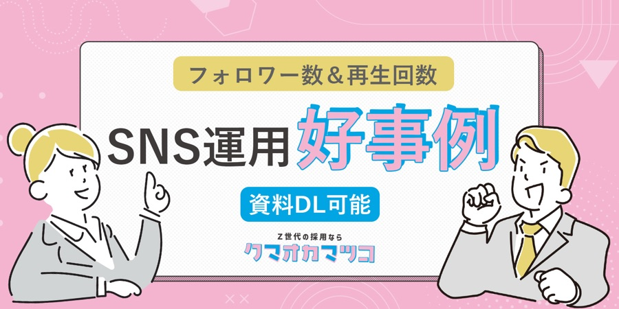
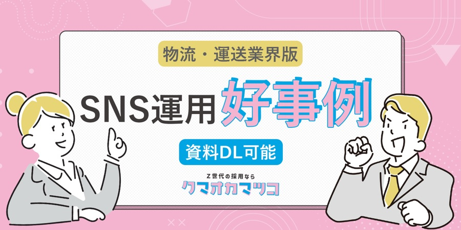
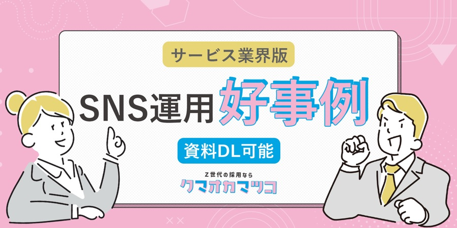
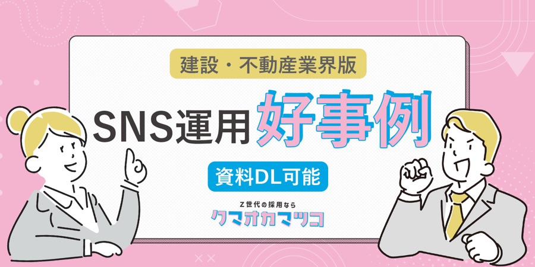
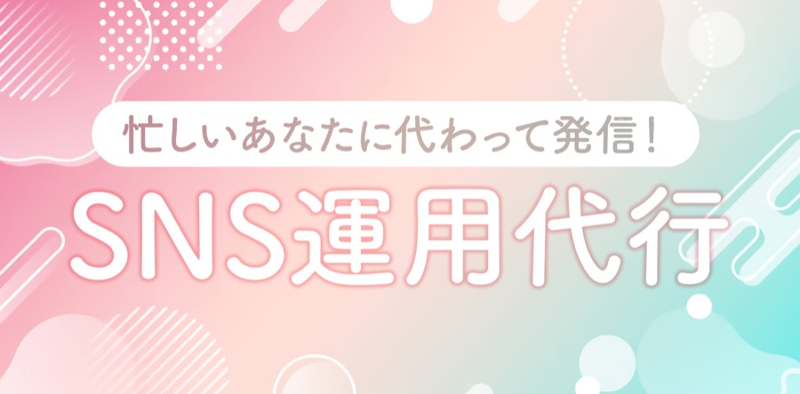
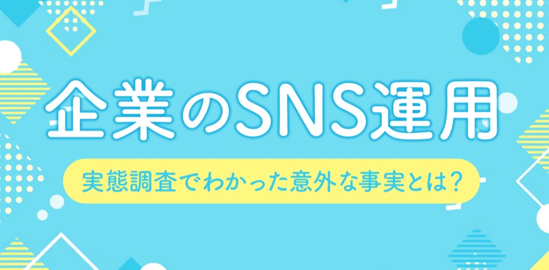
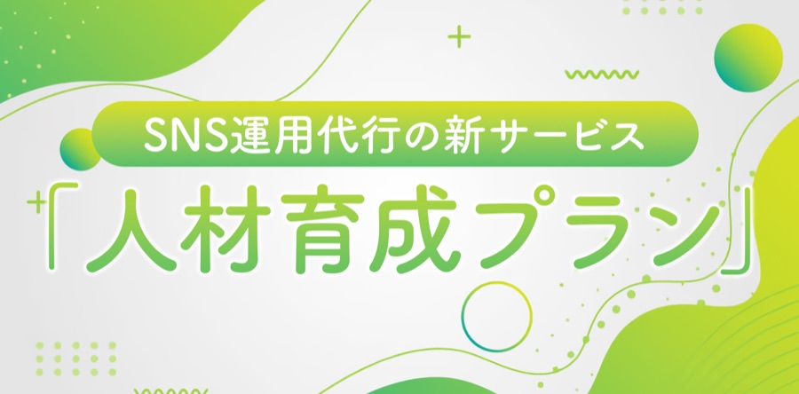

最新記事 / NEW
SNS採用 / SNS
人材ニュース / NEWS
採用の極意 / HRD
お役立ち資料 / DOCUMENT
完全無料でお役立ち資料をダウンロードいただけます！
すぐ使えるテンプレート集
すぐ見つかる自社の採用課題
すぐわかる採用トレンド
すぐ真似できる採用戦略

フォロワー数＆再生回数版
SNS運用を通じて“会社の雰囲気”や“働く人のリアル”を発信し、フォロワーや視聴者との接点を増やすことで応募につなげた成功事例をご紹介

物流・運送業界版
求人媒体では出会えなかった層へリーチし、応募数・採用数の改善に直結した具体的な取り組みをデータと共にご紹介。

サービス業界版
従来の求人媒体では届けられなかった若年層や未経験層にアプローチし、応募数の大幅増加や採用成功につながった具体的な成果をまとめています。

建設・不動産業界版
会社の雰囲気や魅力を動画や広告でダイレクトに伝え、若手層や未経験層から応募が集まった具体的な成果をご紹介しています。
すぐ導入できるSNS代行サービス

SNS運用代行
＼自社SNSフォロワー150万人超・総再生回数10億回突破の実績も／
SNSで新卒エントリー数8倍・中途48倍以上に成長した企業の“本気のSNS採用”まとめました。

企業のSNS運用代行 実態調査
この資料では、実際の調査結果をもとに、雰囲気重視時代の採用戦略を読み解きます。
他社はどう動いてる？自社はどう見られている？採用広報のヒントが詰まった資料です。

新サービス「人材育成プラン」
SNS運用、代行だけで満足していませんか？
この資料でご紹介するのは、投稿代行だけで終わらない、「自社でバズらせる力を身につける」ためのSNSサービスです。